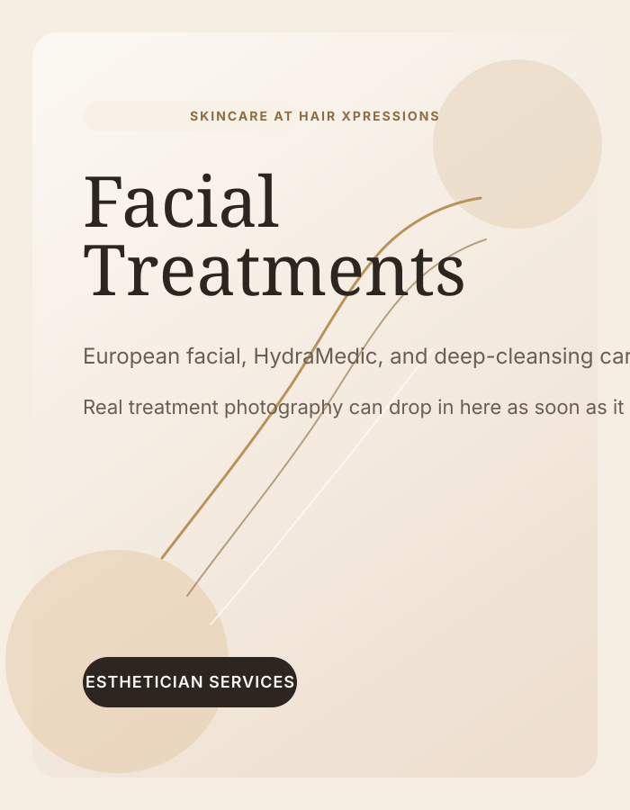
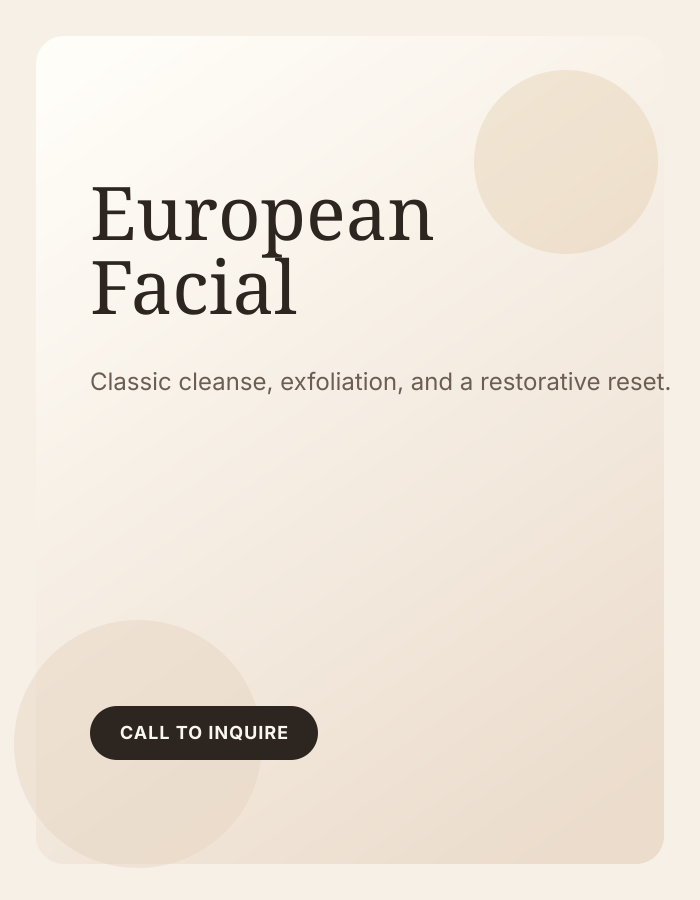
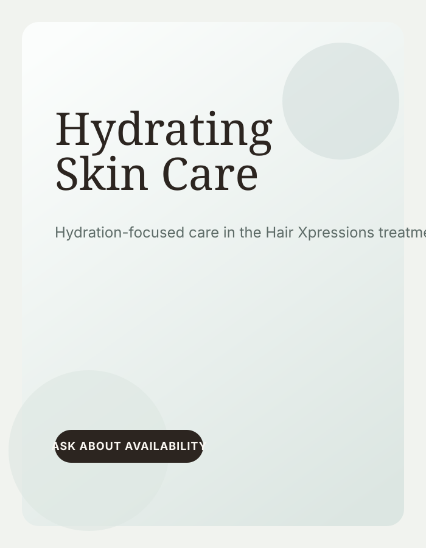

European and Hydra Medic facials, plus makeup support, in a quieter treatment setting for clients who want experienced hands and a calmer pace.
A great facial is not about piling on extra steps. It is about understanding the condition of your skin, choosing the right level of cleansing or hydration, and giving you a result that feels sustainable after you leave the room.
Najia Gharbi brings decades of esthetics experience to the salon. Every facial begins with a skin conversation first, so the service matches your current skin condition rather than a generic menu script.
Best results usually come from a regular cadence, with most clients returning every 4 to 6 weeks.
Book a Facial
Facials and makeup sessions are consultation-led. Availability and final pricing can vary, so confirm details in Square or by phone when booking.
Please arrive 5 minutes early for facials and skip retinols or strong actives for 48 hours before your appointment.

A classic facial for cleansing, gentle exfoliation, and a more balanced, rested finish. This is a strong option if it has been a while since your last facial or you want regular maintenance.

A deeper hydration-focused treatment for skin that feels depleted, dull, or stressed. It is especially helpful before events or during colder, drier months.